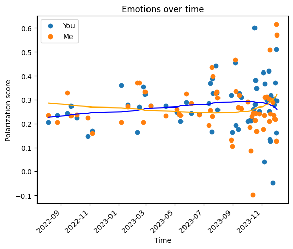

At the turn of the new year I went through a breakup with my ex. The breakup was messy and confusing and led me to injuring both of my achilles while over-training for a marathon as I was running away from my problems. Since then, I have been bedridden with way too much time to think about what went wrong. So I decided the healthiest form of closure would be looking into signs of the breakup in our messages! /s
I was interested in two research questions:
Were there any observable trends in our messages leading up to the breakup?
Do these trends express themselves in other breakups?
To answer these questions I looked at the polarization of our text messages leading up to the breakup, with the hypothesis being: As the texts get close to the breakup, they will show more negative sentiment relative to earlier in the year. I only have data for 2023, but I believe this will be enough for a preliminary analysis because the breakup was in November/December.
First I had to decrypt the Signal database, which can be done with this guide. Once I got it opened in my database manager I exported a csv of the messages with my ex and started cleaning the data in Jupyter and python. I then preformed the sentiment analysis with VaderSentiment and binned the sentiment for each day, for me and my ex-partner.
What I found was that the sentiment did not just get more negative leading up to the breakup. It got more positive too! In the figure below, see how some days show increasing positivity and other increasing negativity as time goes on. Which, if I think about it, makes perfect sense. As my ex and I were working through our issues, we would have days where we feel like we are going to make it, followed up by days where we both feel like it's over. The intense switching of positive and negative emotions can be seen in this data.

For my second research question, I unfortunately was unable to find other people's breakup text data. Maybe the NSA or Facebook will throw me a bone one day.
Here is a little piece I wrote describing the breakup. I hope you enjoy it.
Love vs Body
Laying on the couch in pain, I questioned why I push myself physically. Was it the breakup? I don’t know. It was fun, but I always do this. This happened with biking, backpacking, and now running. When I grab hold of a new love I inevitably beat myself to death with it.
Cycling was my first love. I started my ride at 6am. The bay was filled to the brim with a cool, damp mist. Rolling over the golden gate bridge and deep into silicon valley, I stopped at a bench. The fog was burning off, the sun was making its appearance, and I could feel my muscles spasming. Maybe next time I would be more prepared.
Backpacking was my second. I was halfway through my hike up the mountain, eight miles in. I had just passed the lush, west facing side where ferns percolated the edges of the trail, brushing against my hips. I was tapping the rocks with the tips of my shoes, throwing off dust and quickly climbing to the middle portion. The sun had just crested the distant peak, I had forgotten my boots, stubbornly pushing on despite the sharp pebbles digging into my feet. In the back of my mind, I hoped to share the beauty of the mountains with someone, without the pain.
Running was my third. I finished up my run, walked up the old creaky staircase going to my moms small studio, yanked the door open and plopped myself on the couch. I had just accomplished my longest run yet. After only running seriously for one month I was running 8 miles with ease. Although compared with today's running partner, I was still miles behind, she had continued the run another 14 miles until she circumnavigated the city.
My ex was my fourth love. It ended in a mess and the “what ifs” linger. What if we spent more time together? What if we closed the long distance sooner? Would we have not grown so far apart? What if we did not push our relationship over the edge? What if we noticed the damage we were inflicting, taking a moment to stop, and turn around? My last love showed me how to run, and I ran away from the emotions of the breakup until I was broken up with by both.
One month later I am sitting in bed patiently waiting for my tendons to rebuild. Without the blood vessels they do not have the energy for a speedy recovery like muscles. So I wait here, biding my time in bed. Listening to the birds through the open window, praying my next love does not strike me dead.